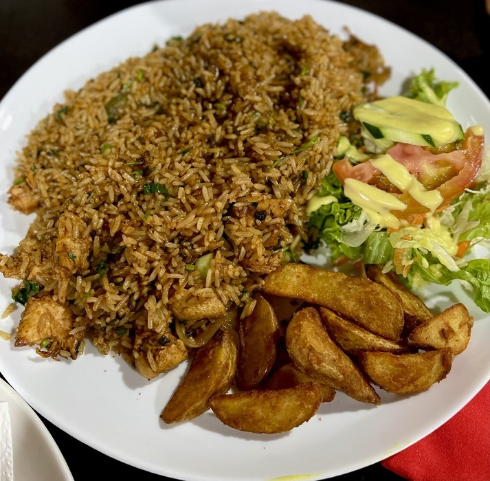

Pinto con huevo

Ingredientes: Arroz, frijoles, torta de huevo, platanos maduros
Precio: 3500 colones
Tamales
Ingredientes: Masa, arroz, cerdo, verduras
Precio: 1800 colones
Cafe
Ingredientes:Cafe
Precio: 1000 colones
Arroz con pollo
Ingredientes: Arroz, frijoles molidos, pollo, papas fritas
Precio: 2800 colones
Olla de carne
Ingredientes: Carne, Arroz, Verduras
Precio: 4000 colones
Pescado
Ingredientes: Arroz, pescado empanizado, ensalada, papas fritas
Precio: 6000 colones